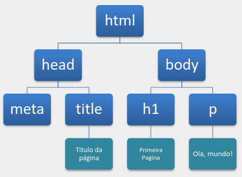
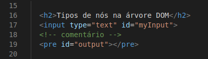
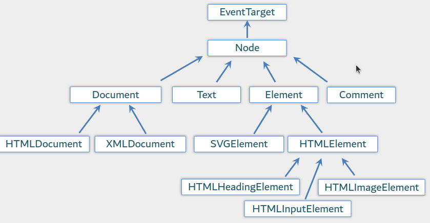

Este código tem como objetivo demonstrar os tipos de nós presentes na árvore DOM da página.
Inicialmente, temos um espaço em branco, seguido de um elemento "h2", um campo de entrada de texto (input), um comentário, um elemento "pre" e, por fim, uma tag "script", ademais, temos também o espaço referente a quebra de linha que também é contado. O código em JavaScript seleciona o elemento com o id "output", que corresponde ao "pre", e, em seguida, percorre todos os nós filhos do elemento "body" utilizando um laço.
Dentro desse laço, a estrutura de protótipos de cada nó é concatenada à string que será exibida na tela. Após o laço, são feitas verificações para identificar se o elemento de input pertence a diferentes tipos de nós na DOM, usando o conceito de herança da Programação Orientada a Objetos.
Esses resultados também são concatenados ao conteúdo do elemento "output". Por fim, o protótipo do construtor do objeto "document" é adicionado ao conteúdo exibido na página.